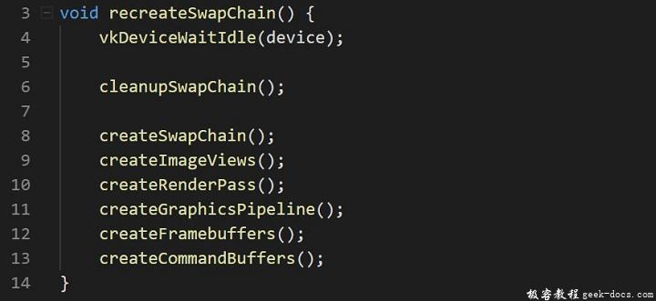

Vulkan 重构交换链，现在我们已经成功的在屏幕上绘制出三角形，但是在某些情况下，它会出现异常情况。窗体surface会发生改变，使得交换链不在与其兼容。可能导致这种情况发生的原因之一是窗体的大小变化。我们必须在这个时机重新创建交换链。
重新创建交换链
添加新的函数recreateSwapChain并调用createSwapChain及依赖于交换链或者窗体大小的对象相关的所有创建函数。
void recreateSwapChain() {
vkDeviceWaitIdle(device); createSwapChain();
createImageViews();
createRenderPass();
createGraphicsPipeline();
createFramebuffers();
createCommandBuffers();
}
我们首先调用vkDeviceIdle,就像前一个章节提到的，我们不能触碰正在使用中的资源。很明显，要做的第一件事情就是重新创建交换链本身。图像视图也需要重新创建，因为它们直接建立在交换链图像基础上。渲染通道需要重新创建，因为它依赖交换链图像的格式。在窗体调整大小的操作期间，交换链图像格式很少发生变化，但仍应该被处理。在创建图形管线期间指定Viewport和scissor 矩形大小，所以管线需要重新构建。可以使用动态状态改变viewports和scissor rectangles，避免重新创建。最后帧缓冲区和命令缓冲区也需要重新创建，因为它们也依赖交换链的图像。
为了确保重新创建相关的对象之前，老版本的对象被系统正确回收清理，我们需要移动一些cleanup代码到不同的函数中，这样可以在recreateSwapChain函数调用。该函数定义为cleanupSwapChain:
void cleanupSwapChain() {}

我们从cleanup中将需要被重新创建的对象所对应的清理代码移动到cleanupSwapChain中:
void cleanupSwapChain() {
for (size_t i = 0; i < swapChainFramebuffers.size(); i++) {
vkDestroyFramebuffer(device, swapChainFramebuffers[i], nullptr);
} vkFreeCommandBuffers(device, commandPool, static_cast<uint32_t>(commandBuffers.size()), commandBuffers.data()); vkDestroyPipeline(device, graphicsPipeline, nullptr);
vkDestroyPipelineLayout(device, pipelineLayout, nullptr);
vkDestroyRenderPass(device, renderPass, nullptr); for (size_t i = 0; i < swapChainImageViews.size(); i++) {
vkDestroyImageView(device, swapChainImageViews[i], nullptr);
} vkDestroySwapchainKHR(device, swapChain, nullptr);
}void cleanup() {
cleanupSwapChain(); vkDestroySemaphore(device, renderFinishedSemaphore, nullptr);
vkDestroySemaphore(device, imageAvailableSemaphore, nullptr); vkDestroyCommandPool(device, commandPool, nullptr); vkDestroyDevice(device, nullptr);
DestroyDebugReportCallbackEXT(instance, callback, nullptr);
vkDestroySurfaceKHR(instance, surface, nullptr);
vkDestroyInstance(instance, nullptr); glfwDestroyWindow(window); glfwTerminate();
}
我们重头创建命令对象池command pool，但是比较浪费看起来。相反的，我们选择借助vkFreeCommandBuffers函数清理已经存在的命令缓冲区。这种方式可以重用对象池中已经分配的命令缓冲区。
以上部分就是重新创建交换链的工作！然而这样做的缺点就是在重新创建交换链完毕之前，会造成渲染停止。创建新交换链的同时允许在旧的交换链的图像上继续绘制命令。需要将之前的交换链传递到VkSwapchainCreateInfoKHR结构体中的oldSwapChain字段，并在使用之后立即销毁。
窗口大小调整
现在我们需要搞清楚哪些情况下重新创建交换链是必要的，并调用recreateSwapChain函数。一个通常的条件是窗体的大小变化。让我们调整窗体的大小，并观察捕捉到的事件。修改initWindow函数不再包含GLFW_RESIZABLE行，或者将其参数从GLFW_FALSE修改为GLFW_TRUE。
void initWindow() {
glfwInit(); glfwWindowHint(GLFW_CLIENT_API, GLFW_NO_API); window = glfwCreateWindow(WIDTH, HEIGHT, "Vulkan", nullptr, nullptr); glfwSetWindowUserPointer(window, this);
glfwSetWindowSizeCallback(window, HelloTriangleApplication::onWindowResized);
}...static void onWindowResized(GLFWwindow* window, int width, int height) {
if (width == 0 || height == 0) return; HelloTriangleApplication* app = reinterpret_cast<HelloTriangleApplication*>(glfwGetWindowUserPointer(window));
app->recreateSwapChain();
}
glfwSetWindowSizeCallback函数会在窗体发生大小变化的时候被事件回调。遗憾的是，它只能接受一个指针作为参数，所以我们不能直接使用成员函数。但幸运的是，GLFW允许我们使用glfwSetWindowUserPointer将任意指针存储在窗体对象中，因此可以指定静态类成员调用glfwGetWindowUserPointer返回原始的实例对象。然后我们可以继续调用recreateSwapChain，这种情况通常发生在，窗体最小化并且导致交换链创建失败时.
chooseSwapExtent函数应该增加更新逻辑，使用窗体最新的width和height代替最初的WIDTH和HEIGHT:
int width, height;
glfwGetWindowSize(window, &width, &height);VkExtent2D actualExtent = {width, height};
次优或过期的交换链
有些时候Vulkan可能告诉我们当前的交换链在presentation时不再兼容。vkAcquireNextImageKHR和vkQueuePresentKHR函数可以返回具体的值明确。
- VK_ERROR_OUT_DATE_KHR: 交换链与surface不再兼容，不可进行渲染
- VK_SUBOPTIMAL_KHR: 交换链仍然可以向surface提交图像，但是surface的属性不再匹配准确。比如平台可能重新调整图像的尺寸适应窗体大小。
VkResult result = vkAcquireNextImageKHR(device, swapChain, std::numeric_limits<uint64_t>::max(), imageAvailableSemaphore, VK_NULL_HANDLE, &imageIndex);if (result == VK_ERROR_OUT_OF_DATE_KHR) {
recreateSwapChain();
return;
} else if (result != VK_SUCCESS && result != VK_SUBOPTIMAL_KHR) {
throw std::runtime_error("failed to acquire swap chain image!");
}
如果交换链获取图像timeout，表明不再可用。所以我们需要立即重新创建交换链，并在下一次drawFrame调用中尝试获取。
你也可以选择在交换链不是最佳状态的时候，选择重新创建，比如刚才说的大小不匹配问题。在这里因为我们已经获得了一个图像，所以继续进行。VK_SUCCESS和VK_SUBOPTIMAL_KHR都被认为是“成功”返回码。
result = vkQueuePresentKHR(presentQueue, &presentInfo);if (result == VK_ERROR_OUT_OF_DATE_KHR || result == VK_SUBOPTIMAL_KHR) {
recreateSwapChain();
} else if (result != VK_SUCCESS) {
throw std::runtime_error("failed to present swap chain image!");
}vkQueueWaitIdle(presentQueue);
vkQueuePresentKHR函数返回同样的值。在我们的案例中我们，如果是非最佳状态，也选择重新创建交换链。因为我们需要最好的效果。尝试调整窗体的大小，帧缓冲区的大小变化与窗体匹配。
Congratulations，我们完结了第一个运行比较完整的Vulkan程序，在下面的章节中我们尝试摆脱之前的硬编码，使用顶点缓冲区代替vertex shader中写死顶点数据。